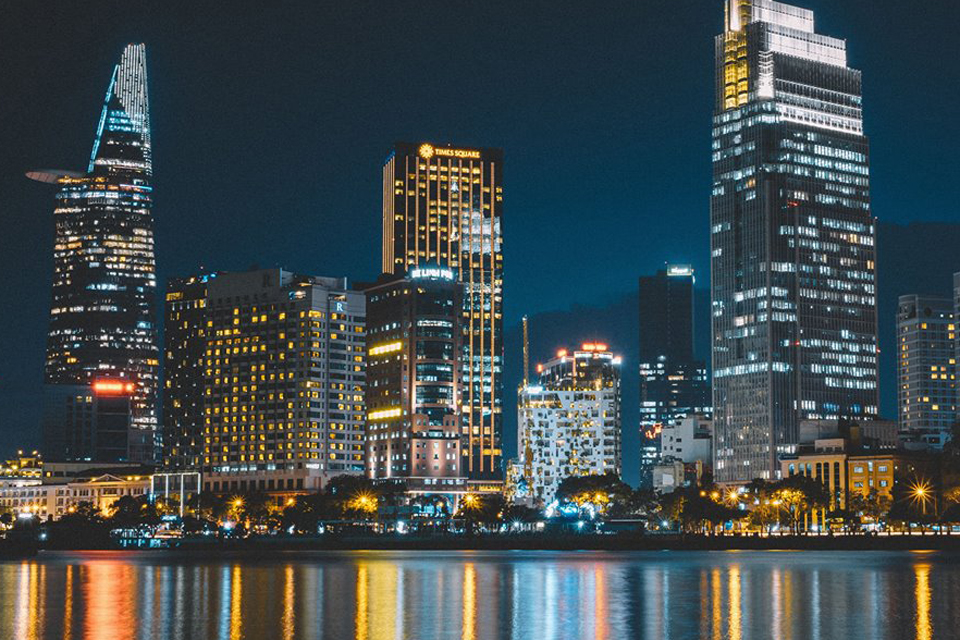

T.P Hồ Chí Minh
(Ảnh:Nguồn Google)
Thành phố Hồ Chí Minh nằm ở giữa vùng Nam Bộ trù phú, tiếp giáp với phía Nam của miền Ðông Nam Bộ và rìa Bắc của miền Tây Nam Bộ. Là thành phố đông dân và lớn nhất Việt Nam. Nơi đây là đầu mối giao thông lớn, nối liền với các tỉnh trong vùng và là cửa ngõ quốc tế của khu vực. Ngay cái nhìn đầu tiên, Sài Gòn - thành phố Hồ Chí Minh đã để lại ấn tượng sâu sắc của một đô thị lớn nhất, náo nhiệt nhất và năng động nhất trong cả nước. Những phố xá đèn sáng choang, sinh hoạt và vui chơi giải trí kéo dài đến tận khuya. Những dòng xe cộ hối hả trên khắp các ngả đường như không bao giờ dứt. Dãy dãy cửa hiệu với hàng hóa phong phú đủ màu, đủ loại góp phần làm nên danh tiếng "Sài Gòn - thiên đường mua sắm". Nhan nhãn những quán ăn, cửa tiệm, nhà hàng với thực đơn rất đa dạng khiến ẩm thực trở thành một cái thú không thể thiếu đối với du khách đến nơi đây.

(Ảnh:Nguồn Google)
Nhưng đàng sau sự sôi nổi ấy là một cuộc sống phóng khoáng mà hài hòa, với những phong tục tập quán lâu đời của một nền văn hóa truyền thống đã thích nghi với cuộc sống khai hoang mở đất ở một vùng đồng bằng sông nước, và sớm giao thoa với các nền văn hóa trong khu vực và phương Tây. Hàng trăm chùa chiền, hàng trăm ngôi đình thờ phụng các anh hùng đất nước và các tiền hiền có công mở cõi vẫn quanh năm nhang khói. Các chứng tích của sự nghiệp giải phóng thành phố và đất nước được trân trọng bảo tồn. Ngoài các lễ tết chính thức, người dân thành phố tổ chức rất trọng thể nhiều lễ hội theo truyền thống "uống nước nhớ nguồn" như Lễ hội Nghinh Ông, Ngày giỗ tổ nghề, Ngày Thầy thuốc, Ngày Nhà giáo, Ngày Báo hiếu, Ngày Phụ nữ… Các kiến trúc của Sài Gòn - Hòn ngọc Viễn Đông xưa được giữ gìn và tôn tạo, trở thành những điểm tham quan lý thú. Bên cạnh đó là những công trình hiện đại phát huy từ cảm hứng trong kiến trúc truyền thống Việt Nam. Ở nơi đất hẹp người đông này, du khách sẽ bất ngờ với những đại lộ rợp bóng cổ thụ trăm năm, những công viên rộng rực rỡ hoa lá, những khu biệt thự thanh bình. Bên cạnh những tòa cao ốc mới ở trung tâm thành phố, khách sẽ có dịp ghé thăm Chợ Lớn của người Hoa với những khu phố cổ nhộn nhịp, hoạt động thương mại và sản xuất luôn nhộn nhịp ngày đêm. Là trung tâm du lịch và cửa ngõ du lịch lớn nhất trong cả nước, thành phố Hồ Chí Minh có hệ thống cơ sở vật chất và dịch vụ du lịch khá phát triển, từ những điểm vui chơi giải trí cho đến khách sạn, nhà hàng. Khí hậu thành phố dễ chịu, nắng không quá nóng và mưa không kéo dài nên mùa nào cũng có thể là mùa du lịch. Người dân thành phố, thân thiện và phóng khoáng, luôn mong được tiếp đón du khách từ mọi phương trời. Với hệ thống 11 bảo tàng, thành phố Hồ Chí Minh là nơi có số bảo tàng nhiều nhất so với các tỉnh, thành trong cả nước. Nội dung trưng bày của các bảo tàng khá phong phú, và không chỉ về lịch sử và văn hóa địa phương, mà của cả Nam bộ, quốc gia và khu vực Đông Nam Á, cung cấp nhiều kiến thức lý thú. Trên 1.000 ngôi chùa, đình, đền và miếu được xây dựng qua nhiều thời kỳ cũng là những tài sản quý về văn hóa, kiến trúc và nghệ thuật. Bạn sẽ tìm thấy những chùa Phật giáo Nam bộ tiêu biểu, những ngôi đình xưa gắn liền với lịch sử khẩn hoang mở đất. Bên cạnh đó là những chùa "cách tân" lớn nhất và đẹp nhất trong cả nước, kết hợp nhuần nhuyễn giữa phong cách hiện đại với kiến trúc chùa cổ truyền. Thành phố có đến nửa triệu người Hoa sống tập trung nên số chùa Hoa cũng nhiều nhất so trong nước, kiến trúc đa dạng và phong phú, nhiều chùa đã được công nhận di tích lịch sử - văn hóa của thành phố và quốc gia. Người Pháp đã để lại nhiều công trình đẹp và đa dạng. Có thể nói hiếm có đô thị nào ở Đông Nam Á lại có nhiều dạng kiến trúc, nhiều trường phái, phong cách nghệ thuật phương Tây như Sài Gòn - thành phố Hồ Chí Minh. Điển hình như trụ sở Ủy ban Nhân dân Thành phố theo phong cách Đệ Tam Cộng hòa Pháp, Ngân hàng Nhà nước chịu ảnh hưởng trào lưu Tân Nghệ thuật, Nhà Thiếu nhi với phong cách Tân Cổ điển, Nhà Rồng phong cách Đông Dương, Bưu điện với trường phái Chiết Trung, nhà thờ Đức Bà với nghệ thuật Rôman, nhà thờ Huyện Sĩ theo Tân Gôtic… Mảng kiến trúc đương đại, đang bùng nổ, trăm màu trăm vẻ, tạo cho thành phố một diện mạo vui mắt, trong đó có một số tòa nhà đẹp, có giá trị thẩm mỹ cao. Nhưng điểm du lịch độc đáo nhất của thành phố vẫn là Địa đạo Củ Chi, một công trình độc đáo trong lịch sử quân sự thế giới, biểu tượng của ý chí sắt đá và thông minh mưu trí của quân dân thành phố trong cuộc kháng chiến chống Mỹ cứu nước. Lẫy lừng không kém là rừng ngập mặn Cần Giờ với những trận chiến phá tàu giặc trên cửa sông Sài Gòn, nay là một điểm du lịch sinh thái tuyệt vời với những cánh rừng đước xanh vô tận. Bảo tàng Hệ thống bảo tàng của thành phố Hồ Chí Minh gồm 11 bảo tàng cùng nhiều nhà lưu niệm, nhà truyền thống, phòng truyền thống ở các quận, huyện. Bảo tàng Lịch sử Việt Nam là bảo tàng lớn nhất, và cũng là bảo tàng đầu tiên của thành phố, ra đời từ những năm đầu thế kỷ 20. Nhờ không ngừng sưu tầm và bảo quản được hiện vật qua các thời kỳ, nên Bảo tàng Lịch sử đã có một bộ sưu tập phong phú gần 30.000 hiện vật giá trị. Bảo tàng Hồ Chí Minh, nơi giới thiệu về cuộc đời và sự nghiệp của Hồ Chủ tịch, thu hút nhiều khách nội địa nhất. Trong khi đó, Bảo tàng Chứng tích Chiến tranh trưng bày về tội ác dã man của quân xâm lược Mỹ đối với nhân dân Việt Nam, là địa chỉ không thể thiếu trong chương trình tham quan của du khách nước ngoài. Chùa chiền Có những ngôi chùa tiêu biểu của phong cách kiến trúc chùa Phật giáo cổ truyền ở Nam bộ với khung cảnh thanh nhàn, nội thất u nhã, và hàng chục pho tượng thờ, cột, bao lam gỗ chạm trổ tinh vi. Lại có những chùa xây dựng theo phong cách hiện đại nhưng lấy cảm hứng từ kiến trúc truyền thống với nội thất cao rộng và sáng sủa, bài trí đơn giản, tôn nghiêm, kết cấu bêtông cốt thép nhưng vẫn giữ dáng dấp cổ truyền. Bên cạnh đó là hàng trăm ngôi đình thờ Thành Hoàng gắn liền với lịch sử khai hoang mở đất. Hàng năm các đình tổ chức lễ kỳ yên vào mùa xuân, với các nghi thức tế lễ và ca múa cúng thần long trọng. Đền thờ các vị anh hùng dân tộc như đền Hùng Vương, đền Trần Hưng Đạo, Lăng Ông… không chỉ là những công trình kiến trúc đẹp mà còn là nơi tấp nập bá tánh đi lễ cầu phước lộc an khang Trên 30 chùa Hoa, thực chất là miếu, gắn liền với lịch sử định cư của Sài Gòn – Chợ Lớn xưa kia. Kiến trúc chùa Hoa với màu sắc rực rỡ, nhiều tác phẩm điêu khắc, hội họa sinh động, thư pháp rồng bay phượng múa, mỗi chùa một sắc thái riêng theo phong tục tập quán của năm nhóm ngôn ngữ Quảng Đông, Phước Kiến, Triều Châu, Hải Nam và Hẹ Nhà thờ Các nhà thờ ở Sài Gòn chủ yếu xây dựng vào nửa sau thế kỷ 19. Nhìn chung, kiểu cách kiến trúc theo lối Pháp của giai đoạn này vừa kết hợp phong cách Rôman, Gôtic quen thuộc thời Trung cổ châu Âu. Có công trình xây dựng nhằm mục đích làm chỗ dựa tinh thần cho chính quyền thực dân Pháp, có nơi là công trình tôn giáo đáp ứng nhu cầu tâm linh của tín đồ bản xứ. Nhà thờ có quy mô lớn nhất thành phố là nhà thờ Đức Bà xây dựng xong vào năm 1880, còn gọi là nhà thờ Nhà nước vì do chính quyền thuộc địa Pháp bỏ tiền ra xây dựng, là nơi diễn ra các cuộc lễ lạc chính thức, sau này mới chuyển về cho giáo phận Sài Gòn quản lý. Vào thời đó, nhà thờ Đức Bà được xem là lớn nhất trong các thuộc địa Pháp. Ngôi nhà thờ xây bằng gạch ngói Marseille, kính màu và khung sườn thép mang từ Pháp sang kết hợp với đá xanh Biên Hòa. Các ô cửa cuốn tròn kiểu Rôman cùng cung vòm gãy kiểu Gôtic gợi nhớ dạng thánh đường lớn ở Pari, Chartres, Reim. Nhà thờ Tân Định nhỏ hơn, dành cho họ đạo người Việt, tiêu biểu của sự pha trộn nhiều phong cách khác nhau của kiến trúc nhà thờ Pháp do được xây dựng và nới rộng trong nhiều đợt. Nhà thờ Huyện Sĩ theo nguyên mẫu nhà thờ nhỏ ở Pháp. Nhà thờ Cha Tam ở Chợ Lớn cũng thế, nhưng bên trong lại trang trí hoành phi liễn đối như đền miếu người Hoa. Kiểu nhà thờ xây dựng vào thời kỳ sau này đã có nhiều nỗ lực đi tìm phong cách bản địa hơn. Điển hình là nhà thờ Vườn Xoài dung hòa được tính cách hiện đại và nét cổ Việt, với cửa tam quan, mái phủ lớn. Các kiến trúc khác Kiến trúc thời Pháp để lại nhiều công thự đẹp, hài hòa với cảnh quan, trở thành một nét thanh lịch riêng của thành phố. Các công thự này rất đa dạng, gồm từ trụ sở các cơ quan hành chính của thành phố cho đến các bảo tàng, nhà hát, trường học,… thuộc khá nhiều trường phái và phong cách nghệ thuật khác nhau. Không ít những chi tiết của nghệ thuật Việt, Chăm, Khmer đã được đưa vào trang trí. Đặc biệt có những công trình kết hợp hài hòa kiến trúc phương Tây với những yếu tố bản địa thành một phong cách riêng gọi là kiến trúc Đông Dương, điển hình như Nhà Rồng, Bảo tàng Lịch sử Việt Nam hay trường Lê Hồng Phong. Kiến trúc Sài Gòn trước năm 1975 cũng để lại một số công trình giá trị, trong đó nổi bật trào lưu kiến trúc "nhiệt đới" nghĩa là chú ý đến yếu tố khí hậu nhiệt đới, cùng khuynh hướng nỗ lực thể hiện văn hóa nghệ thuật dân tộc trong kiến trúc đương đại. Những công trình nổi tiếng có Hội trường Thống Nhất, Thư viện Khoa học Tổng hợp, Ngân hàng Thương Tín, Viện Trao đổi Văn hóa Pháp IDECAF, một số chùa Phật giáo,… Thời mở cửa, kiến trúc Sài Gòn bùng nổ. Công trình mới đa dạng, từ những tòa nhà cao tầng đến biệt thự, nhà phố theo công nghệ mới và nhiều ý tưởng mới. Cao ốc hàng chục tầng được xây dựng khá nhiều, trong đó, cao nhất là tòa nhà Trung tâm Thương mại Sài Gòn, 33 tầng, cao 128m. Một số công trình đẹp, được đánh giá có tính nghệ thuật cao. Điểm du ngoạn Một chuyến du ngoạn trên sông không chỉ để ngắm cảnh, đón gió mát mà còn để có cái nhìn bao quát về quá trình phát triển của vùng đất này: Từ những vạt dừa nước trên vùng đất bồi chuyển sang những cao ốc đẹp của thời kỳ đổi mới; từ những bến ghe chất đầy nông sản miền Tây đến cảng Sài Gòn lớn nhất Việt Nam đón tàu biển khắp thế giới; từ bến Nhà Rồng là nơi Bác ra đi tìm đường cứu nước sang bến Bạch Đằng cho tàu du lịchtrên sông… Trên địa đầu tây bắc của thành phố là Địa đạo Củ Chi, căn cứ cách mạng với hệ thống đường hầm như mạng nhện trong lòng đất, nổi danh cả trên thế giới. Quần thể địa đạo và Đền Tưởng niệm Bến Dược bên sông Sài Gòn nay là một di tích lịch sử - văn hóa với phong cảnh hữu tình, dòng sông thanh bình, vườn cây sum suê và đồng lúa xanh bát ngát. Rừng ngập mặn Cần Giờ án ngữ cửa sông Sài Gòn, nguyên là căn cứ của lực lượng đặc công với những trận diệt tàu giặc lẫy lừng, đã trơ trụi vì bom đạn và chất độc màu da cam. Nay những cánh rừng đước mênh mông đã được hồi sinh, trở thành Khu Dự trữ Sinh quyển Thế giới, một điểm du lịch sinh thái hấp dẫn. Bạn cũng sẽ ngạc nhiên về một điểm sinh thái khác cách không xa trung tâm thành phố là vườn cò Thủ Đức, trong một vùng quê sông nước êm ả, thanh bình, nơi "đất lành chim đậu". Hệ thống chợ Tp.HCM Chợ Bến Thành, một biểu tượng của Sài Gòn, được xem là chợ bán lẻ lớn nhất theo nghĩa bạn có thể tìm thấy tại đây đủ thứ mặt hàng, từ bình dân đến cao cấp, đặc biệt hàng thực phẩm thuộc loại chọn lọc nhất. Chợ An Đông mới xây dựng, có sáu tầng, trang bị khá hiện đại, phong phú nhất là hàng vải và hàng giả da. Bình Tây là chợ bán sỉ lớn nhất, không chỉ của thành phố mà cả phía Nam, là đầu mối phân phối sản phẩm tiểu thủ công nghiệp của Chợ Lớn, nông sản của đồng bằng sông Cửu Long và Tây Nguyên cùng hàng nhập khẩu từ Trung Quốc, Thái Lan… đi khắp mọi miền đất nước. Chữ bán sỉ và bán lẻ ở đây được hiểu theo nghĩa rất tương đối bởi vì thực tế các chợ lớn hay nhỏ đều có cả hai hình thức buôn bán này.
Khám Phá Việt Nam
Với những thông tin trên website,hi vọng sẽ giúp các bạn hiểu hơn về những địa danh nổi tiếng của Việt Nam.
Trở Lại Đầu Trang